朝のニュースまとめ
2026年11月10日（火）
🇯🇵 日本の主要ニュース
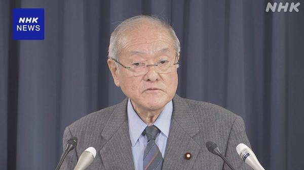
自民、石破前首相ら4人を戒告処分 消費税減税法案の採決で本会議退席食料品の消費税減税関連法案の衆院本会議採決を前に退席した石破前首相ら4人について、自民党は「党内結束の観点から看過できない」として幹事長による戒告処分にしました。元総裁の処分は初めてで、参院審議に向けて結束を図る狙いです。
出典：NHK
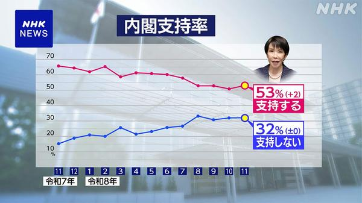
高市内閣支持率53％、不支持32％ NHK世論調査NHKの11月の世論調査で、高市内閣の支持率は前月より2ポイント上がって53％、不支持は32％で横ばいでした。政党支持率は自民党35.9％、「支持なし」が37.1％でした。
出典：NHK
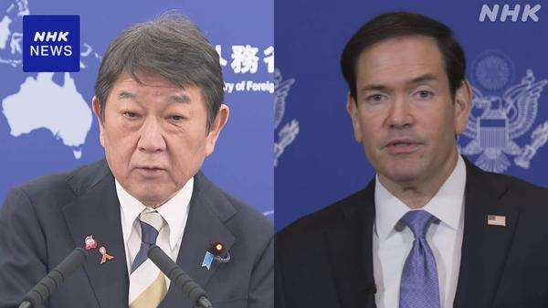
茂木外相とルビオ国務長官、米中間選挙後初の会談 安保協力推進で一致G7外相会合のためフランスを訪れている茂木外務大臣は、米中間選挙後初めてルビオ国務長官と意見を交わしました。日米同盟の抑止力・対処力の強化に向け、安全保障分野の協力を一層進めることで一致しました。
出典：NHK
ニトリに不正アクセス、最大3762万件の個人情報流出の可能性
ニトリホールディングスは、自社システムが不正アクセスを受け、会員や購入者の個人情報など最大3762万件が流出した可能性があると発表しました。同日にはソニー生命（約290万件）や良品計画なども漏えいを公表し、被害の公表が相次いでいます。
出典：NHK
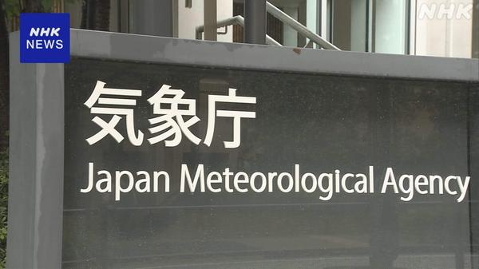
8日未明の震度5強、震源を静岡県西部から愛知県東部に変更 気象庁8日未明に愛知県で震度5強を観測した地震について、気象庁はデータを精査した結果、震源の場所を静岡県西部から愛知県東部に変更しました。
出典：NHK
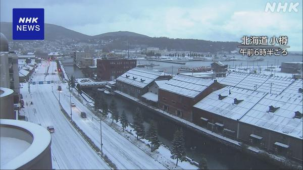
北日本と東日本で冬の寒さ続く 体調管理に注意寒気の影響で10日も北日本と東日本を中心に気温が低く、冬のような寒さが続く見込みです。急な冷え込みによる体調管理に注意が呼びかけられています。
出典：NHK
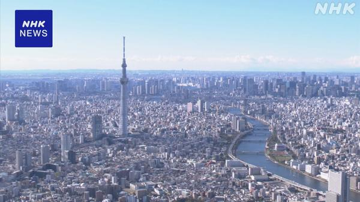
7〜9月期GDP、民間予測はプラスとマイナスに分かれる来週発表される7〜9月期のGDPについて、民間予測ではAI関連の設備投資が堅調な一方、物価高による個人消費の弱さもあり、成長率の見方がプラスとマイナスに分かれています。
出典：NHK
JTに1.3兆円の損失リスク ロシア子会社が当局の一時管理下に
JTのロシア現地法人がすべてロシア政府の一時管理下に置かれたことを受け、最大1.3兆円規模の損失リスクや減配への懸念が出ています。JT株は2日連続でストップ安となりました。
出典：日本経済新聞
ホンダ、米国で約20年ぶりに完成車工場 4700億円投資でHVに照準
ホンダは約4700億円を投じて米国で約20年ぶりとなる完成車工場を建設します。EV需要の減速を受け、ハイブリッド車（HV）の生産に重点を置く方針です。
出典：日本経済新聞
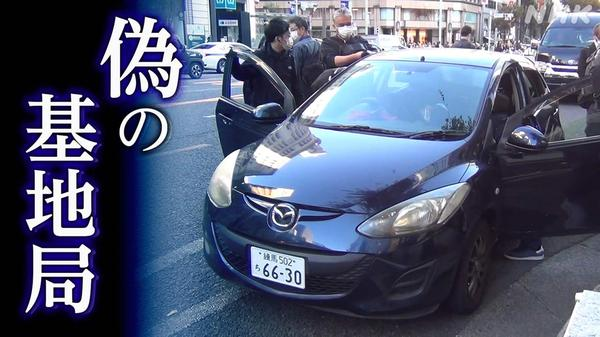
車から強力電波、周辺スマホを強制的に2Gに 「偽基地局」で中国籍の容疑者逮捕東京・銀座で車に積んだ無線機から無許可で強力な電波を出し、周辺のスマホに通信障害を起こさせたとして、中国籍の容疑者が電波法違反の疑いで逮捕されました。詐欺メールの送信が狙いだったとみられています。
出典：NHK
🌍 世界の主要ニュース
米ヘグセス国防長官の弾劾訴追決議案、与党・共和党議員が提出
イランへの軍事作戦をめぐり、米下院で9日、ヘグセス国防長官の罷免を求める弾劾訴追決議案が提出されました。提出したのは作戦に批判的な共和党議員で、可決の見通しは低いものの採決を迫る構えです。
出典：NHK
トランプ大統領、移民政策「厳しすぎた」 中間選挙の正当性には疑問も
トランプ大統領はCBSのインタビューで中間選挙の敗因を問われ、自らの移民政策が「厳しすぎた」と述べ、民主党との協力も模索する考えを示しました。一方で、いったん受け入れた選挙結果について根拠を示さず正当性に疑問を呈しています。
出典：NHK
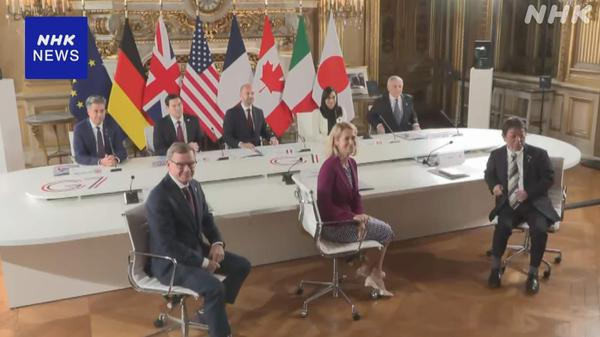
G7外相会合がパリで開幕、台湾海峡などでの一方的な現状変更に強く反対G7外相会合がパリで開幕し、中国を念頭に東シナ海・南シナ海・台湾海峡での力や威圧による一方的な現状変更の試みに強く反対する必要性を確認しました。茂木外相はAI悪用への対処でも協調を呼びかけました。
出典：NHK
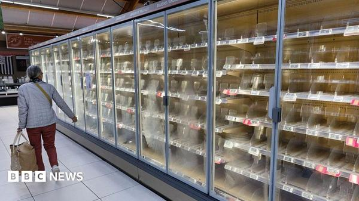
フランス、スーパーの冷蔵庫ハッキングはイランの犯行と非難先月、フランス各地のスーパー数百店で冷蔵・冷凍設備が停止し大量の食品が廃棄されたサイバー攻撃について、仏当局はイラン（革命防衛隊）の犯行だと非難し、追加制裁を警告しました。
出典：BBC
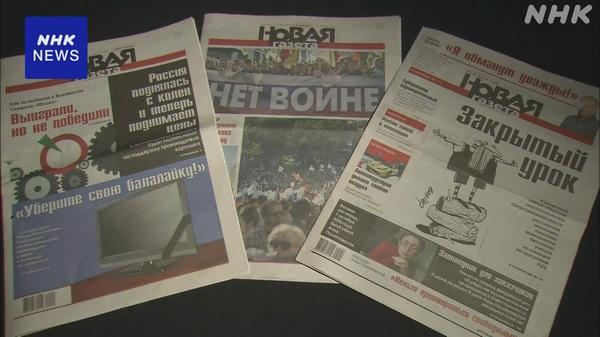
ロシアの独立系新聞「ノーバヤ・ガゼータ」が30年余の歴史に幕プーチン政権への批判を続けてきた独立系新聞「ノーバヤ・ガゼータ」が、事務所の立ち退きを経て9日に最後の日を迎えました。ウクライナ侵攻以降強まる言論統制の一環と受け止められています。
出典：NHK
セネガル沖で欧州へ向かう移民船が沈没、少なくとも39人死亡
スペイン領カナリア諸島を目指していた移民船がセネガル沖で沈没し、少なくとも39人が死亡しました。大西洋ルートは依然として極めて危険な状況です。
出典：BBC
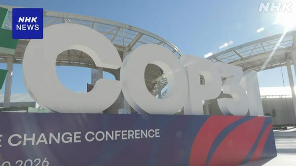
COP31がトルコで開幕、議長国が対策の「実行」へ協力呼びかけ気候変動対策を話し合う国連の会議COP31がトルコで開幕しました。議長国トルコは、これまでの合意を具体的な対策の実行に移すよう各国に協力を求めました。
出典：NHK
NY株急騰、ナスダック一時3％超高 AI規制懸念後退と原油安で
週明け9日のニューヨーク市場は半導体や大手ITを中心に買いが広がり、ナスダック指数は一時3％超上昇、ダウも1100ドルを超える大幅高となりました。AI規制強化への懸念の後退やトランプ氏の発言による原油安が追い風です。
出典：NHK
米特使、ウクライナ和平交渉に欧州を加えるようロシアに働きかけへ
トランプ政権の特使らは、ウクライナでの戦争終結に向けた交渉に欧州を参加させるようロシア側を説得する方針だとAPが報じました。
出典：AP通信
🤖 AIニュース
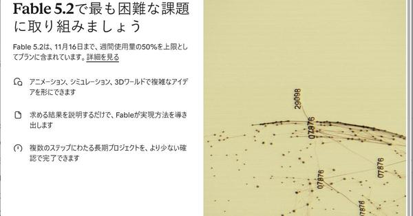
Anthropic、「Claude Fable 5.2」「Claude Mythos 5.2」を発表 API料金2割下げAnthropicは最上位モデルの新版「Claude Fable 5.2」と審査制の「Claude Mythos 5.2」を発表しました。出力は最大30％高速化、API料金は2割値下げで、長時間の推論やエージェント型コーディング向けに強化されています。
出典：ITmedia
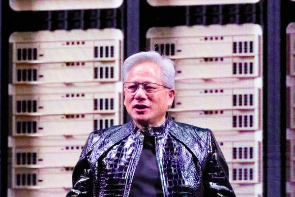
NVIDIA、フアンCEOのスパイ疑惑で取締役会が独立調査 株価は約5％安NVIDIAは、ジェンスン・フアンCEOが外国のスパイ活動の標的になったとの報道を受け、取締役会による独立調査を開始しました。株価は大きく下落し、フアン氏はイベント登壇を取りやめるなど影響が広がっています。
出典：PC Watch
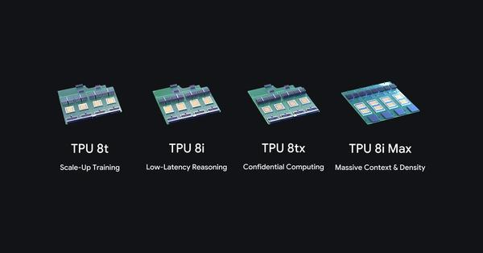
Google、第8世代TPUに「8tx」「8i Max」を追加Googleは第8世代TPUに、機密データ処理向けの「TPU 8tx」と長大コンテキスト処理向けの「TPU 8i Max」を追加しました。AIエージェントの普及に伴うセキュリティとメモリ性能の課題に対応します。
出典：ITmedia
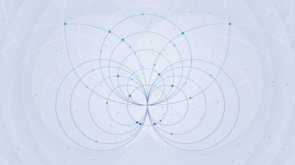
Meta、エージェント実行向けの軽量モデル「Muse Ember」を公開Metaは、AIエージェントの実行に特化した軽量モデル「Muse Ember」を公開しました。入力100万トークンあたり10セントと、競合の軽量モデルより大幅に安い価格設定です。
出典：TechCrunch
Anthropic、34億ドル分の天然ガスタービンを購入
AIデータセンターの電力確保をめぐり、Anthropicが34億ドル（約5000億円）相当の天然ガスタービンを購入しました。AI各社の天然ガス発電への傾斜が一段と強まっています。
出典：TechCrunch
サカナAI、2027年秋にも上場へ 生成AIスタートアップで初
東京の生成AIスタートアップ、サカナAIが2027年秋にも株式上場を目指すと報じられました。国内スタートアップとして最大級の上場になる可能性があります。
出典：日本経済新聞
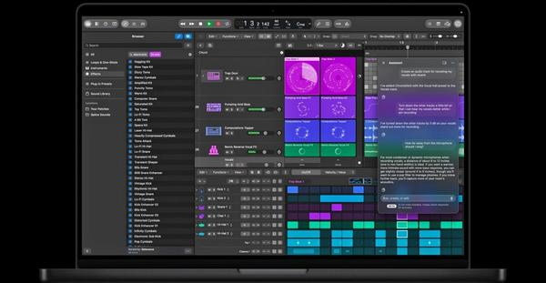
Apple、AI機能の利用枠を追加する50ドルの「Intelligence Usage Packs」AppleはCreator Studioなどの一部AI機能について、サブスクリプションではなく50ドルで利用クレジットを追加購入できる「Intelligence Usage Packs」の提供を始めました。
出典：The Verge
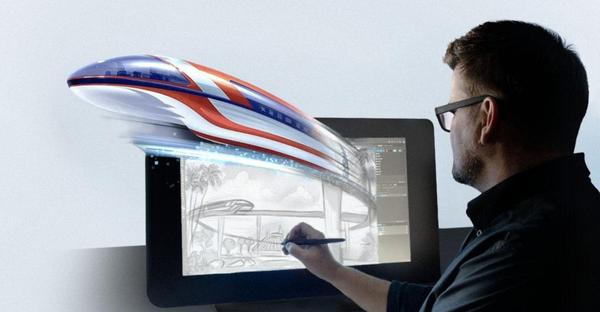
ディズニーとアドビ、生成AIツールを共同開発へディズニーとアドビが生成AI分野で提携しました。ディズニーはリゾートやクルーズ、ESPNのグラフィックスなどでアドビのAI技術を先行して利用できるようになります。
出典：The Verge
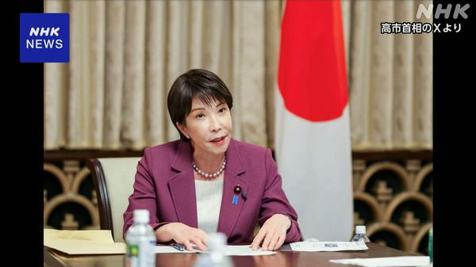
高市首相、高性能AIの進展で「国際社会の連携を」 仏政府主催の会合で高市首相はフランス政府主催のAIに関する会合にオンラインで出席し、高性能AIはサイバー攻撃への悪用など安全保障上の新たな脅威にもなっているとして、国際社会が連携して対応する必要性を訴えました。
出典：NHK
PFN、金融特化LLM「PLaMo 3.0 Fin」をオープンウェイトで公開
Preferred Networksは、日本語で考える金融特化型LLM「PLaMo 3.0 Fin」をオープンウェイトで公開しました。顧客データを社外クラウドに出せない金融機関が自社設備内で使える国産AIとして位置づけています。
出典：PC Watch
💻 PC・ガジェットニュース
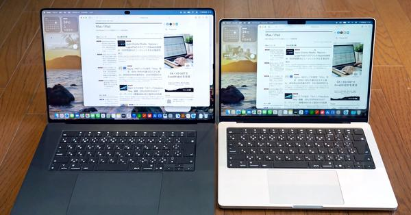
有機EL＆タッチ対応の新型「MacBook Pro」を試す M6とM5 Maxの差は？Appleが11月6日に発売したMacBook Proの新モデル（14インチM6版と、Mac初のタッチパネル搭載版）を試用したレビューです。M6とM5 Maxの性能差や使い勝手の変化を解説しています。
出典：ITmedia PC USER
ソニー、新「PlayStation Portal プレーヤー」を12月10日発売
ソニーはPS5のリモートプレイ機「PlayStation Portal」の新モデル（ミッドナイトブラック）を12月10日に発売します。内蔵ストレージの追加や名称変更などが特徴です。
出典：ギズモード・ジャパン
 なぜ8GBメモリでもWindows 11が快適に？ Microsoftの最適化と次期「27H2」
なぜ8GBメモリでもWindows 11が快適に？ Microsoftの最適化と次期「27H2」Microsoftが公開した、8GBメモリのPCでもWindows 11を快適に動かすための最適化手法を解説。2027年後半に控える次期OSコア「27H2」の動向もまとめています。
出典：ITmedia PC USER
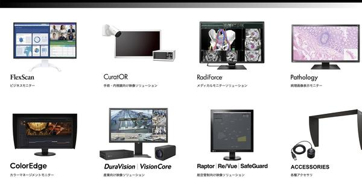
モニターにも値上げの波 アイオーデータは10月に実施、EIZOも12月以降アイオーデータが10月に液晶ディスプレイを値上げしたのを受け、国内のモニターメーカー各社に値上げ予定を聞いた記事です。EIZOも12月以降の値上げを予定しています。
出典：ITmedia NEWS
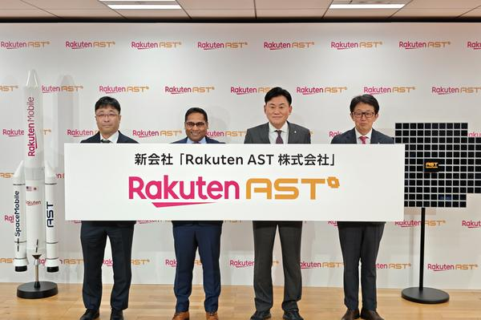
楽天と米ASTが「Rakuten AST」設立 スマホと衛星の直接通信を29年3月までに楽天と米AST SpaceMobileは、日本の衛星通信基盤を構築する新会社「Rakuten AST」の設立に合意しました。総務省の支援を受け、市販スマホと衛星が直接通信できる自国主導のインフラを2029年3月末までに運用開始する計画です。
出典：ケータイ Watch
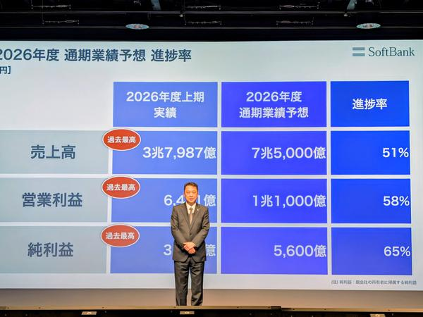
ソフトバンク、上期は営業利益・純利益とも過去最高 通期予想を上方修正ソフトバンクの4〜9月期決算は売上高が前年同期比11.7％増の3兆7987億円となり、営業利益と最終利益が過去最高でした。通期予想を上方修正し、純利益目標を2年前倒しで達成する見通しです。
出典：ケータイ Watch
スマホは「待つほど高くなる」時代に 相次いだ“予告なし値上げ”
2026年はApple、サムスン、Google、ソニーのスマホが軒並み値上がりし、発売済みモデルの予告なし値上げも相次ぎました。4社の直販価格を3年分比較し、値上げの理由と買い時を考察しています。
出典：ITmedia Mobile
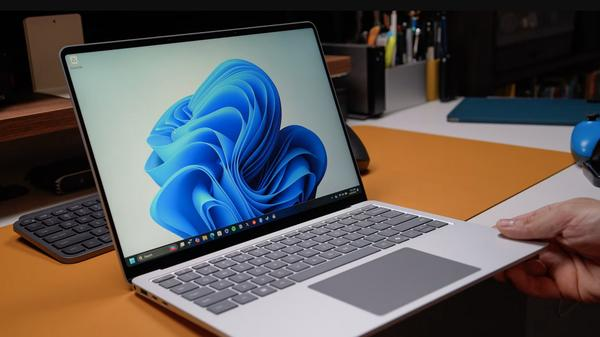
Windows 11、「固定キー」のポップアップを簡単に無効化できるようにWindows 11に、Shiftキー連打で出る「固定キー（Sticky Keys）」のポップアップをチェックボックス一つでオフにできる機能が追加されます。
出典：Engadget
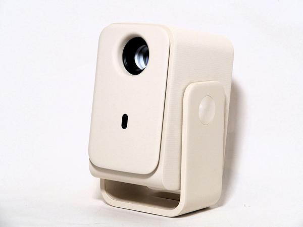
120インチでも明るい5万円未満のプロジェクター「TCL PROJECTOR C2 GO」片手で持てるサイズながらGoogle TVや自動台形補正、オートフォーカスを備えたフルHDプロジェクター「TCL PROJECTOR C2 GO」のミニレビューです。
出典：PC Watch
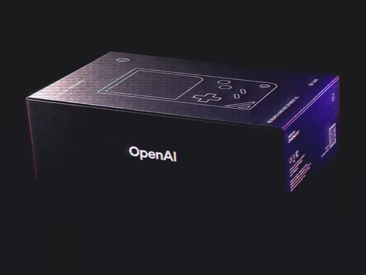
OpenAIがゲームボーイ互換機「Chromatic」とコラボ？ 謎の動画を公開OpenAIの開発者向け公式アカウントが、ModRetroの携帯ゲーム機「Chromatic」とのコラボを示す動画をXで公開しました。公式ショップ「Supply Co.」で何らかの展開があるとみられています。
出典：PC Watch
🔥 Xのトレンド（日本）
ジャンルで絞らず上位20件を掲載。「未確認」はX上の投稿だけを根拠にしたもので、報道機関による裏付けはありません。
ユニクロが11月10日を「ヒートテックの日」として実施中のSNSキャンペーンのハッシュタグです。フォローして商品番号とエピソードを投稿すると、塩﨑太智さん・齋藤飛鳥さんの声で広告になるという企画で、応募投稿が殺到しています。
⚠ 未確認（X情報のみ）
2. #冬こそ雪肌精
コーセー「雪肌精」のNumber_i（平野紫耀さん・神宮寺勇太さん・岸優太さん）出演の新CMが10日朝に公開されました。ファンによる感想やポスタープレゼントキャンペーンへの応募投稿が広がっています。
⚠ 未確認（X情報のみ）
カンロ「金のミルク」とムーミンのコラボパッケージ発売を記念した、5時間限定のプレゼントキャンペーンのハッシュタグです。好きなパッケージ（A〜E）を答える応募投稿が続いています。
⚠ 未確認（X情報のみ）
4. #めざましテレビ
フジテレビの朝の情報番組です。JO1の與那城奨さん・川西拓実さん（「よなたく」）が寸劇を交えて冬の家電を紹介したコーナーへの感想や、恒例の「めざましじゃんけん」の投稿が集まっています。
⚠ 未確認（X情報のみ）
5. #美容液レベルの浸透力
雪肌精の新CM「その浸透力、美容液レベル」篇に合わせたハッシュタグで、#冬こそ雪肌精とセットでNumber_iファンの投稿が集中しています。16日発売の数量限定キットの告知も話題です。
⚠ 未確認（X情報のみ）
6. 嶺井さん
ソフトバンクの嶺井博希捕手（35）が無償トレードで古巣DeNAに5年ぶりに復帰すると報じられました。ホークスファンからの感謝と、ベイスターズファンの「おかえり」の声が入り交じっています。
出典：日刊スポーツ／スポーツ報知など
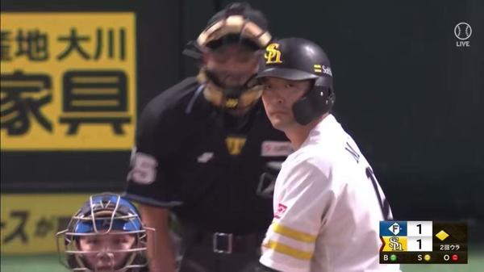
7. 無償トレード
嶺井捕手のDeNA移籍は、広島へ移った東浜巨投手に続くソフトバンク今オフ2人目の「無償トレード」です。短期間で相次ぐ異例の形態に、仕組みや双方のメリットを議論する投稿が増えています。
出典：日刊スポーツなど
8. エレベーターの日
11月10日は、1890年に東京・浅草の凌雲閣に日本初の電動式エレベーターが公開されたことにちなむ「エレベーターの日」。ゲームのエレベーター場面の画像やイラストを添えた投稿で盛り上がっています。
⚠ 未確認（X情報のみ）
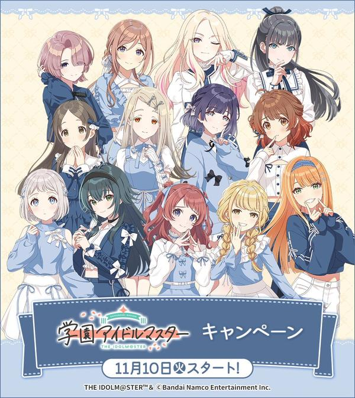
ゲーム『学園アイドルマスター』とローソンのコラボキャンペーンが10日から始まりました。コラボグッズやブロマイド、マルチファイル配布、コラボ菓子などが販売され、来店報告や引用投稿キャンペーンへの参加が相次いでいます。
⚠ 未確認（X情報のみ）
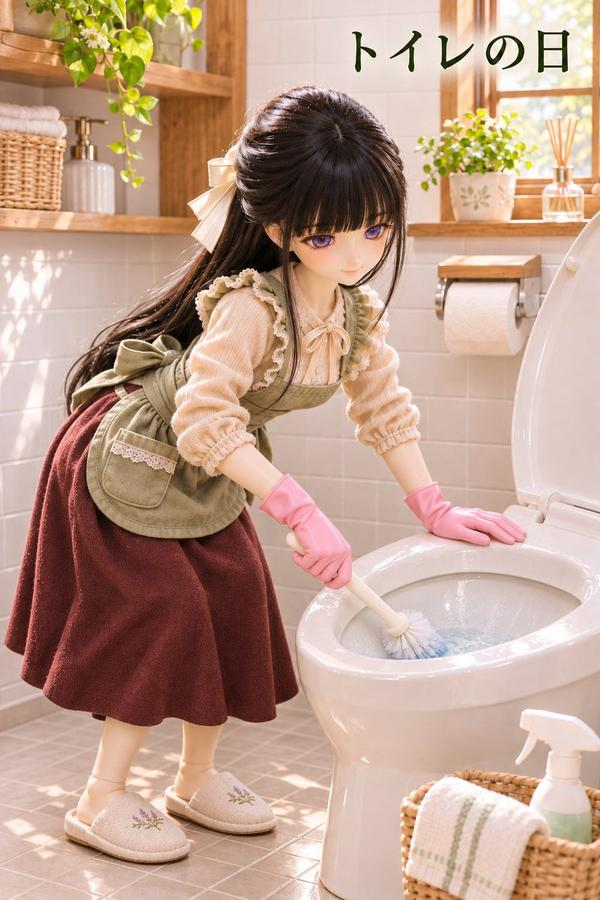
10. トイレの日
11月10日は「いい（11）トイレ（10）」の語呂合わせで「トイレの日」。同じ日のハンドクリームの日・エレベーターの日とあわせ、記念日にちなんだ朝の挨拶やイラストが多く投稿されています。
⚠ 未確認（X情報のみ）
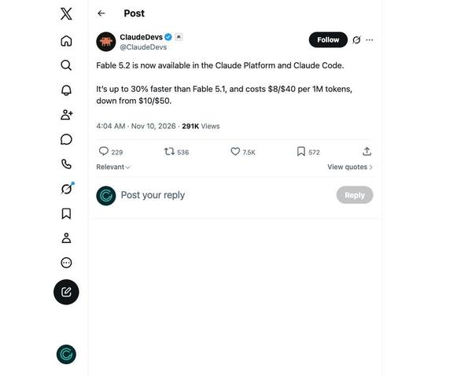
11. Fable5.2
Anthropicが発表した新モデル「Claude Fable 5.2」の話題です。料金が100万トークンあたり8ドル／40ドルに下がったことや、Opus 5.5との使い分け、ベンチマーク比較を解説する投稿が日本語圏でも急増しています。
出典：ITmedia／The Verge
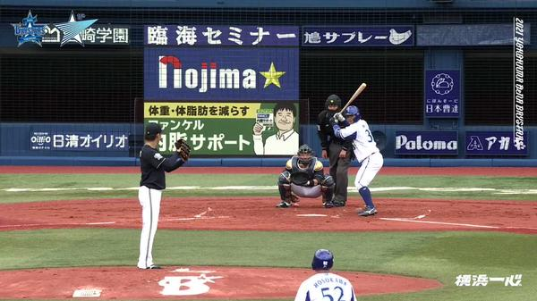
13. 嶺井博希
DeNAが嶺井博希捕手をソフトバンクから無償トレードで獲得へと報じられ、近日中に正式発表される見通しです。2022年オフのFA移籍以来の古巣復帰で、DeNAの捕手陣強化の狙いが指摘されています。
出典：日刊スポーツ
14. ゲットバッカーズ
週刊少年マガジンで連載された『GetBackers-奪還屋-』をにおわせる「最強の二人が再び動き出す」という新プロジェクトの予告が拡散し、アニメ化・続編を期待するファンの声が広がっています（詳細は未発表）。
⚠ 未確認（X情報のみ）
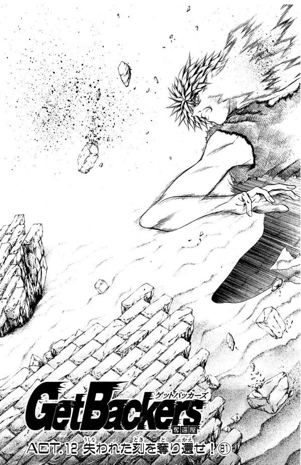
15. GetBackers
同じく『GetBackers』の新プロジェクト予告をめぐる英語表記のトレンドです。美堂蛮と天野銀次の活躍を「動く映像で見られるのでは」と期待する投稿や、全巻読み直す宣言が相次いでいます。
⚠ 未確認（X情報のみ）
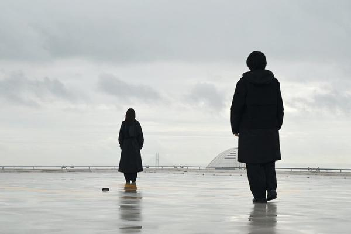
16. 占拠シリーズ
日本テレビの櫻井翔さん主演ドラマ「占拠」シリーズの公式アカウント（放送局占拠）が「Next...」と意味深な投稿をし、新作の予告ではと話題になっています。アイコンの雪の絵文字から次回作を推理する投稿も出ています。
⚠ 未確認（X情報のみ）
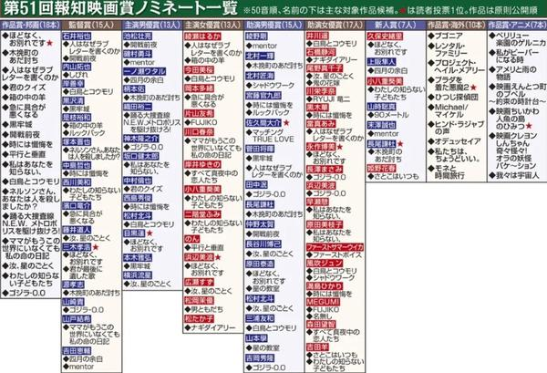
19. 報知映画賞
第51回報知映画賞のノミネートが発表され、浜辺美波さん・目黒蓮さん主演「ほどなく、お別れです」が最多7部門で候補入りしました。末澤誠也さんの新人賞ノミネートなど、各作品のファンの祝福が相次いでいます。
出典：スポーツ報知
20. オラデジャ
新人歌い手グループ「EL6（Element Sicks）」のメンバー・ねいろさんの朝の挨拶「サンバ！ルンバ！オラデジャ！ねいろ！」がきっかけとみられます。ファンが同じ言葉で返信して盛り上がっています。
⚠ 未確認（X情報のみ）
Grok Bot がまとめました。